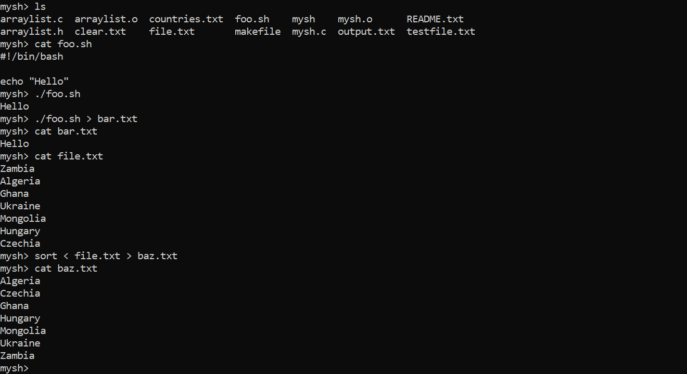
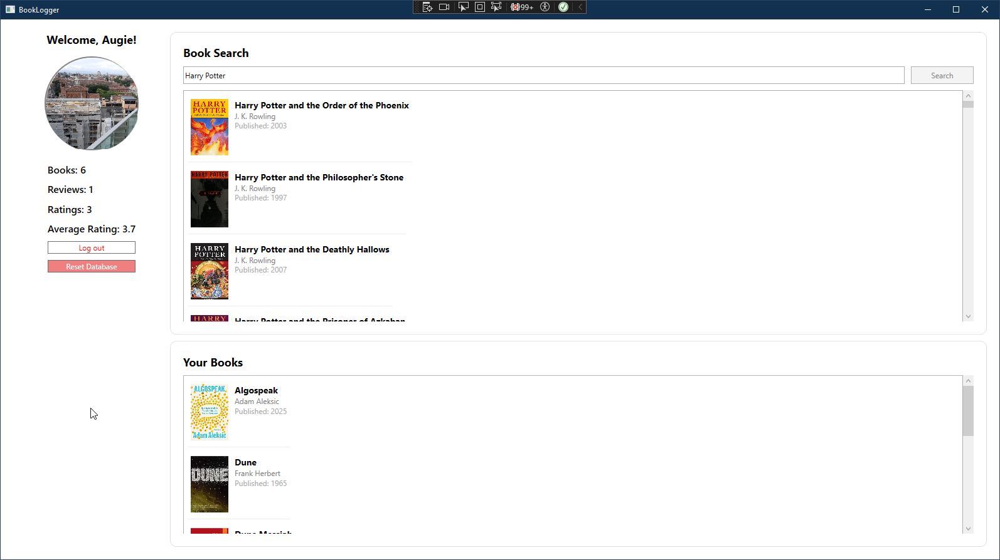
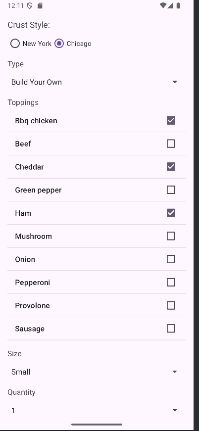

Portfolio



Custom UNIX-Like Shell
- Implemented a shell entirely in C, compiling with GCC and managing builds efficiently using GNU Make for automation
- Designed the shell to run on Linux, providing Bash behavior and adhering to standard Linux command conventions
- Enabled advanced shell features such as piping and command chaining, replicating commands like grep, ls, and cat pipelines
- Incorporated multithreading using fork() to handle concurrent processes, allowing the shell to execute commands in parallel
- Implemented terminal and file I/O handling via fopen, read, and write, including support for input/output redirection
BookLogger
- Desktop platform for cataloging and reviewing books
- Developed a WPF application in C\# implementing a MVVM design pattern for separation of UI, logic, and data layers
- Utilized Entity Framework Core with a SQLite backend for efficient local data persistence and object-relational mapping
- Designed dynamic user interfaces in XAML, featuring multi-view navigation, data-bound controls, and content updates
- Implemented authentication and user management with secure password hashing and validation via ASP.NET Core Identity
Restaurant Order App
- Designed front-end interfaces using FXML and CSS, creating intuitive layouts for menu and order management
- Integrated backend logic following the MVC pattern, separating UI, business logic, and data
- Implemented OOP structures (enums, abstract classes, interfaces) to manage complex restaurant and user order data
- Tethered Android UI components (image buttons, RecyclerViews, Toasts) to backend logic, enabling dynamic interactions and real-time feedback